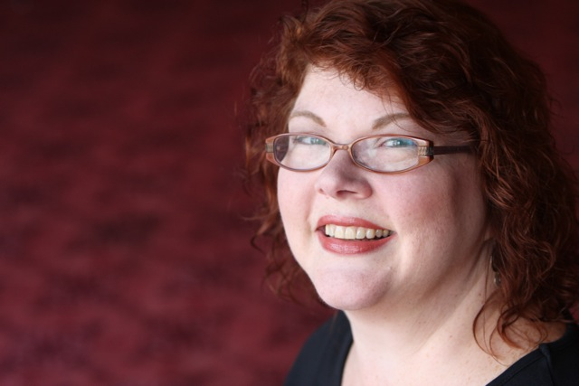
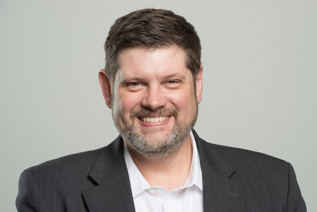

SDP 2017 DAAG CONFERENCE
Keynote Sessions
Conference Dinner Keynote Address
We are extremely happy to welcome Beth Perdue Outland, Vice-President Community Engagement & Strategic Innovation of the Indianapolis Symphony Orchestra, to the DAAG conference, to give this year’s keynote address at the conference dinner on Thursday night. |
Conference Closing Address
We have invited Bryan Everly, Chief Technology officer for NextGear Capital, to deliver an endnote address at the conference close. Bryan will attend all sessions and actively network with attendees throughout the conference, then delivering a closing address in which he will share his key conference learnings and insights, discuss the role of decision analysis relative to his expertise in information technology and management, and pose challenges for the community to address. |
Keynote Speakers
|
 |
Beth Perdue Outland
Vice President, Community Engagement and Strategic Innovation
Indianapolis Symphony Orchestra
Connecting people
with inspiring musical experiences that meet community needs – is the driving
purpose of the ISO Learning Community (LC) developed and overseen by Beth
Perdue Outland at the Indianapolis Symphony Orchestra. By understanding the
needs and aspirations of the community the Learning Community team designs and
delivers programs that apply the unique resources of a professional symphony in
creative, engaging ways that benefit the Orchestra and the city.
This
has resulted in a wide array of programs including: integrating ISO’s Ensemble
in Residence Time for Threeintegration into the Indianapolis community, the Metropolitan Youth Orchestra, The
Art of Leadership and workshops designed to support music-making in the early
childhood classroom.
Beth
is passionate about Indianapolis being an extraordinary place to live and work.
She is a graduate of the Stanley K. Lacy Leadership Program, and serves on the
board of Leadership Indianapolis, Centric Innovation Network and has served on
the Steering Committees for TEDx Indianapolis and the Music Crossroads
Initiative. Beth also chairs the event selection committee for the Spirit and
Place Festival. Beth is the recipient of
the Edna B. Lacy Award for Community Service and Creative Renewal Fellowships
from the Arts Council of Indianapolis in 2005 and 2013. |
|
 |
Bryan Everly
Chief Technology Officer
NetGear Capital
As Chief Technology Officer, Everly is responsible for directing
all aspects of information technology including architecture, security and
compliance, application development, infrastructure and program management.
Everly has more than 30 years of experience in the information
technology sector. He previously served as Vice President, IMM Engineering
& Test for Aprimo, an integrated marketing software and applications
company in Indianapolis. Everly has also served as Sr. Director of Development
for ExactTarget, Inc. and was managing partner for PeopleStrategy, LLC. in
Fishers, IN.
A veteran of the U.S Air Force, Everly received a Bachelor of
Science in Computer Science from Indiana State University.
|
|